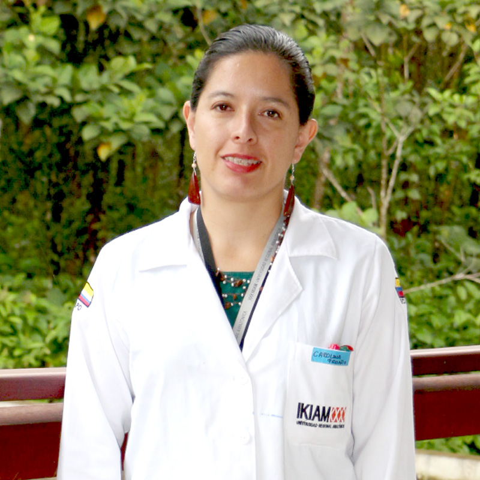
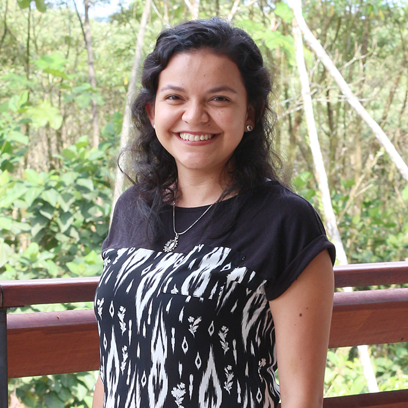

Misión
El laboratorio de Biología Molecular y Bioquímica de la Universidad Regional Amazónica Ikiam visiona con ser un laboratorio de referencia nacional en investigación, enfocándose en el aprovechamiento de los recursos biológicos y genéticos del Ecuador, y la aplicación de los conocimientos tecnológicos en biología molecular, genómica, metabolómica y proteómica.
Visión
Nuestra misión como laboratorio es contribuir al cambio de la matriz productiva del país aportando a la formación y producción científica a nivel de pregrado y postgrado. Además, proveer servicio de análisis moleculares a empresas públicas y privadas, centros de investigación y universidades, contando con tecnología avanzada y personal altamente calificado.
Ph.D. Carolina Proaño
Directora
Doctora en Farmacia por Queen´s University Belfast, QUB; Máster en Microbiología por la Universidad San Francisco de Quito, USFQ; Máster en Gestión y Conservación de la Biodiversidad en los Trópicos de la Universidad San Pablo CEU en España; y Licenciada en Ciencias Biológicas de la Pontificia Universidad Católica del Ecuador, PUCE. Actualmente, es Directora del Laboratorio de Biología Molecular y Bioquímica de la Universidad Regional Amazónica Ikiam e imparte las cátedras de bioquímica I y virología.
Tiene interés en el estudio bioquímico y molecular de los péptidos de anfibios, en particular de péptidos anti-microbiales y farmacológicamente activos. Así como, interés en contribuir mediante investigación científica al entendimiento de la función biológica de estas moléculas en el contexto evolutivo del organismo.
Perfiles:
SCOPUS: https://www.scopus.com/authid/detail.uri?authorId=56966766300
Researchgate: https://www.researchgate.net/profile/Carolina_Proano-Bolanos
ORCID: https://orcid.org/0000-0001-9279-1038
E-MAIL: carolina.proano@ikiam.edu.ec
TELÉFONO: +593 62999160 ext. 295


Ing. Nina Espinosa de los Monteros
Técnico de Laboratorio
Ingeniera en Procesos Biotecnológicos, especialista en técnicas de biología molecular, ADN recombinante, y cultivo in vitro. Principales áreas de conocimiento y aplicación: identificación de flora y fauna mediante análisis genómicos, estudios de diversidad genética de plantas y animales, cultivo in vitro de especies de interés potencial e identificación de compuestos activos en organismos vivos.
Contactar con el investigador.
Ing. Giovanna Morán
Técnico de Laboratorio
Con experiencia en manejo de técnicas y protocolos de biología molecular, diagnóstico (ELISA, Western Blot) y manejo de cultivos e identificación de microorganismos. Ha participado en proyectos relacionados a la producción e identificación de anticuerpos policlonales. Fue expositora de póster científico en el primer Congreso Nacional de Inmunología en Enfermedades Infecciosas y Parasitarias (2015). En el área ambiental, participó en el proyecto de aislamiento e identificación de microorganismos antárticos tolerantes a metales pesados de la UDLA (2017). Actualmente su trabajo se centra en la investigación y descubrimiento de péptidos obtenidos a partir de la secreción de la piel de los anfibios del Ecuador, que poseen actividad biológica, mediante clonaje molecular y su identificación mediante RP-HPLC y espectrometría de masas (MALDI Tof y MS/MS).
Perfiles:
RESEARCHGATE: https://www.researchgate.net/profile/Moran_Giovanna
ORCID: https://orcid.org/0000-0003-3233-6572
E-MAIL: giovanna.moran@ikiam.edu.ec
TELÉFONO: +593 62999160 ext. 150
M.Sc. Andrea Carrera
Técnico de Laboratorio
Ingeniera en Biotecnología por la Universidad de las Fuerzas Armadas, ESPE; con un título propio de postgrado en Genética Médica por la Universitat de València y un Máster oficial en Investigaciones Biomédicas en Cáncer en la Universidad de Navarra. Especialista en métodos de Biología Molecular y el manejo de equipos empleados en el análisis de técnicas genómicas y proteómicas.
Experiencia en diagnóstico molecular de enfermedades infecciosas, genéticas y oncológicas aplicando técnicas de extracción de ADN, ARN y PCR tiempo real. Conocimiento sobre mantenimiento y manipulación de líneas celulares de mamíferos, incluyendo caracterización y edición genómica (CRISPR- Cas9). Actualmente colabora en proyectos de Código de Barras Genético (DNA-barcoding) y ADN ambiental (eDNA) aplicando métodos de Biología Molecular y Secuenciamiento Next Generation.
Perfiles:
ORCID: https://orcid.org/0000-0001-5328-3727
Research Gate: www.researchgate.net/profile/Andrea_Carrera-Gonzalez
E-MAIL: andrea.carrera@ikiam.edu.ec
TELÉFONO: +593 62999160 ext. 150